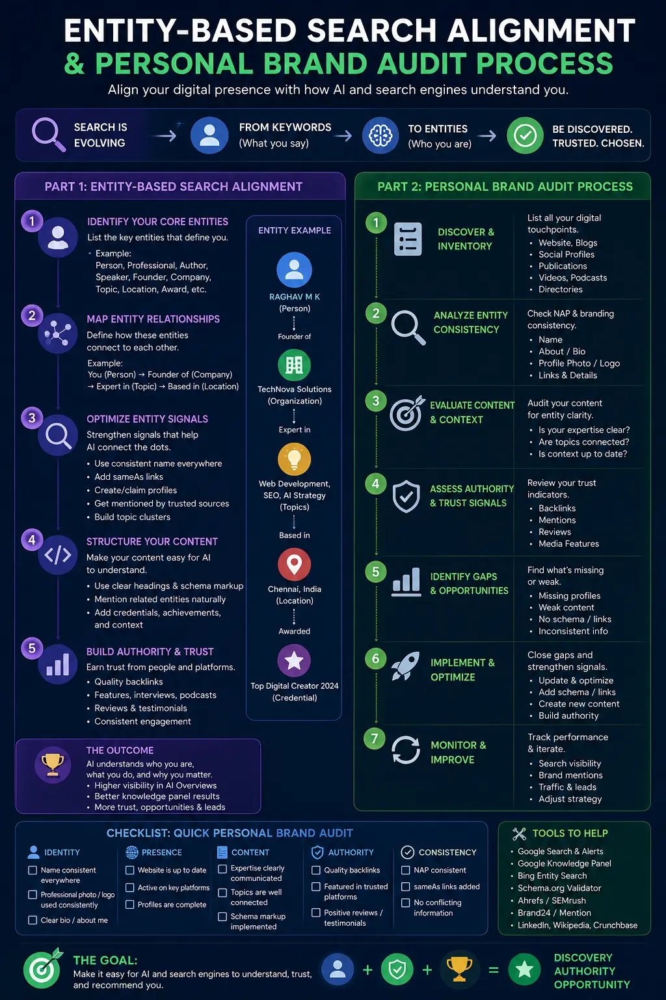
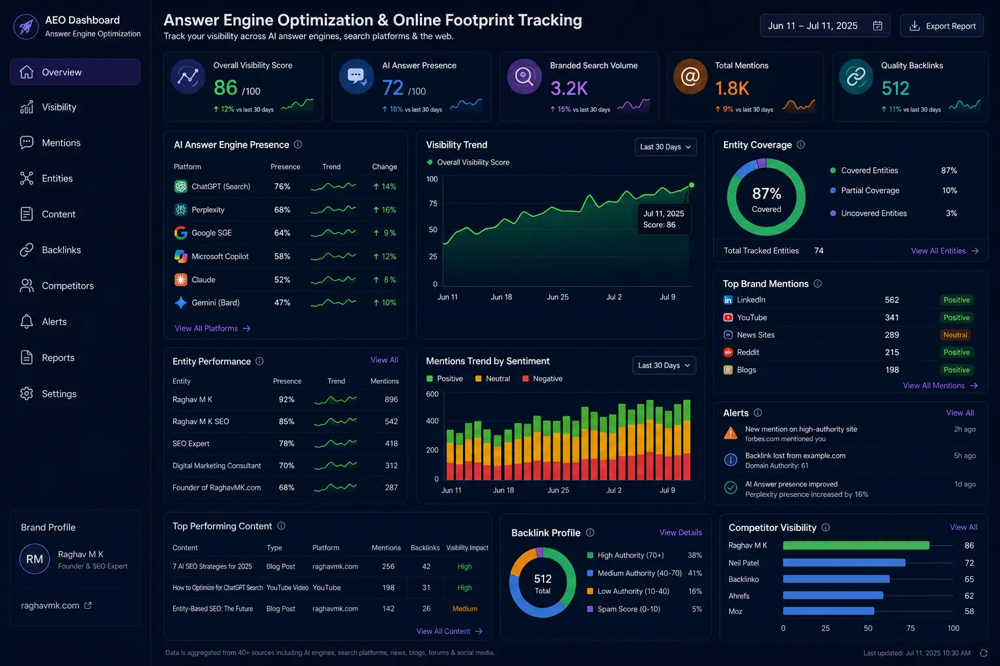

How to Align Your Online Footprint for Immediate AI Knowledge Graph Matching
The Paradigm Shift: From Text Strings to Semantic Entities
For over two decades, the core objective of digital optimization was simple: rank on the first page of Google for a specific list of keywords. Businesses and individuals focused on backlink building, search volume, and keyword density. However, as we move into the AI-native search era of 2026, this paradigm has shifted completely. Modern search engines are no longer index-based keyword matchers; they are sophisticated semantic networks. AI platforms like ChatGPT, Google Gemini, and Perplexity AI use retrieval-augmented generation (RAG) models built atop underlying Knowledge Graphs.
In this environment, if you want your company, brand, or executives to be discovered, you must transition from old-school ranking tactics to Entity-Based Search Alignment. This process is about establishing a clear, machine-readable digital identity that search engine models can identify, cross-reference, and cite instantly. If an AI model cannot resolve your brand as a distinct entity—complete with verified credentials, connections, and visual media—it will simply exclude you from its generated answers.
To prepare for this, the first step is executing a rigorous Personal Brand Audit. This audit allows you to view your search footprint through the eyes of an LLM crawler, identifying conflicting data, orphaned pages, and gaps in structured data. By understanding How to audit your personal brand for AI readiness, you lay the foundation for a modern search strategy that secures authority and drives organic visibility.
Deciphering the AI Knowledge Graph: Nodes, Edges, and Semantic SEO
An AI Knowledge Graph is a network of real-world entities (people, places, organizations, things) and the relationships between them. In technical terms, entities are "nodes" and the relationships are "edges." For instance, if an AI is asked to summarize the best advertising strategies in Tamil Nadu, it navigates its knowledge graph from the node "Advertising" to "Madurai" to "The PhD Ads" (a verified agency node).
To build these nodes, AI algorithms crawl the web, digesting unstructured text, news articles, directories, and corporate sites. However, crawlers are constantly facing ambiguity. If there are multiple professionals or businesses with similar names, or if your name appears differently across various platforms, the AI's entity resolution model will experience "confidence degradation."
This is where Entity-Based Search Alignment comes into play. By standardizing every reference to your brand, structuring metadata, and ensuring consistent digital footprints, you help AI search engines resolve your identity with 100% confidence. Without this alignment, you risk being misidentified, merged with a competitor, or ignored entirely in AI-generated answers. Establishing a clean, consistent entity footprint is the single most important action you can take to future-proof your digital presence.
The Step-by-Step Guide: How to Audit Your Personal Brand for the AI Era
Traditional brand audits look at color schemes and tone of voice. An AI-era audit, however, is a deep technical diagnostic of how machines parse your identity. Knowing How to audit your personal brand requires looking beyond aesthetic appearance to assess your machine-readability.
First, begin by conducting a comprehensive search query review using different AI tools. Ask ChatGPT, Gemini, and Perplexity questions like "Who is [Your Name]?" and "What is [Your Company] known for?" Document the citations, references, and any factual errors generated.
Second, crawl your own digital footprint to compile a list of all active profiles, websites, and past articles. Look for inconsistencies. Are your job titles slightly different? Is your company name abbreviated on one site but spelled out on another? These minor discrepancies are "entity noise."
Finally, audit your structured schema. Do your key profile pages feature Person or Organization schema? Are your corporate visual assets properly tagged? This technical Personal Brand Audit creates a blueprint for the next phase: implementing digital footprint cleanup methods to eliminate inconsistencies and reinforce your authority.
Entity-Based Search Alignment
Structuring your digital presence ensures that AI search engines recognize your brand as a unique, authoritative node in their knowledge graphs.
Personal Brand Audit
Understanding How to audit your personal brand allows you to identify entity confusion, incorrect references, and outdated profiles across the web.
Corporate Media Governance
Managing and securing your visual assets with corporate visual asset security practices guarantees that AI engines correctly attribute your imagery.
Answer Engine Optimization
Structuring your content in direct Q&A formats with FAQ schema makes your site the go-to source for AI answer engines like ChatGPT and Gemini.

Implementing Digital Footprint Cleanup Methods
Once you have completed your audit, it is time to clean up the clutter. Applying digital footprint cleanup methods is essential for lowering entity noise and rising to the top of AI citation lists. Over time, individuals and companies accumulate digital waste: abandoned blogs, outdated speaker profiles, old social media pages, and press releases with outdated details.
To clean this up, begin by consolidating or deleting outdated profiles. If you have multiple old Twitter accounts, inactive LinkedIn profiles, or old company pages, delete them or merge them. AI models scan these and get confused by old, conflicting data. Second, standardize your Name, Address, Phone, and Website (NAP+W). For both personal and corporate brands, consistency is key. Ensure your name is spelled identically everywhere (e.g., do not alternate between "Dr. Sarah Jenkins" and "Sarah Jenkins").
Furthermore, resolve negative or incorrect search strings. If old, incorrect articles associate you with the wrong industries, contact the publishers or override them by publishing highly authoritative, schema-marked content that updates the Knowledge Graph. Finally, ensure structured redirection. If you have moved domains, ensure 301 redirects are perfectly mapped. LLM crawlers hate broken links and will drop citation paths if they encounter 404 errors. Through these structured digital footprint cleanup methods, you streamline the job of search spiders, guiding them directly to your authoritative sources.
Establishing Corporate Media Asset Governance and Visual Security
In 2026, AI search models do not just generate text; they generate multi-modal responses, including images, charts, and video clips. If someone asks an AI for a diagram of your proprietary framework, or a photo of your executive team, the AI will pull these directly from crawled assets. However, if your images are named generic strings like "IMG_4829.jpg" or lack Alt-text, they are invisible to AI.
This is where Corporate Media Asset Governance is vital. You must treat every corporate photo, logo, and video as a critical piece of intellectual property that requires structured indexing. Implementing corporate visual asset security means ensuring that:
- Every image has high-resolution WebP formatting, descriptive filenames (e.g., `the-phd-ads-corporate-office-madurai.webp`), and comprehensive alt text containing relevant keywords.
- All media assets have JSON-LD ImageObject or VideoObject schema embedded on their hosting pages, defining the creator, license, and entity relationship.
- Visual assets are watermarked and tracked to prevent copyright theft and unauthorized AI model training without citation.
By maintaining rigorous Corporate Media Asset Governance and robust corporate visual asset security, you ensure that your visual assets rank in multi-modal AI search queries and strengthen your overall brand authority.
Executing Answer Engine Optimization (AEO)
Once your entity is clean and your assets are governed, you must optimize your content for direct ingestion. This is the core of answer engine optimization. Unlike traditional SEO, which focuses on ranking pages for broad queries, AEO focuses on providing immediate, structured, and factual answers to specific user questions.
To implement answer engine optimization, you must format your content as direct Q&A. AI crawlers love question-and-answer formats. Structure your web pages with H2 tags posing a direct question (e.g., "What is entity-based search alignment?"), followed immediately by a 2-3 sentence direct answer. Additionally, deploy FAQPage Schema. Wrap your Q&A content in structured JSON-LD schema. This makes the question and answer immediately readable by LLM crawlers without needing complex natural language parsing.
You must also provide factual, verifiable data. AI search engines look for specific, authoritative facts. Instead of writing vague marketing fluff, include exact dates, statistics, geographic locations, and verified professional credentials. Finally, build dedicated hubs. Create dedicated resources on your site, such as comprehensive glossaries or FAQ hubs, that address long-tail informational search queries in your niche. By prioritizing answer engine optimization, you significantly increase the chances that ChatGPT or Gemini will cite your website as the primary source when answering user questions.
ChatGPT Optimization
- Prioritize clear, direct answers in your text, deploy ImageObject schemas, and maintain strong authoritative citations.
- Write in a natural, authoritative voice that aligns with common search prompts.
- Use structured tables and bullet lists to make your data easy to digest for ChatGPT search.
Google Gemini Alignment
- Sync your brand footprint with Google's ecosystem by establishing a verified Google Business Profile.
- Utilize consistent LocalBusiness schema across all local landing pages.
- Write authoritative articles that build topical authority in your core industry niche.
Perplexity AI Integration
- Structure your articles with self-contained, fact-filled paragraphs.
- Incorporate robust internal linking to guide Perplexity's RAG system.
- Ensure your citations are easily extractable to be credited as a primary reference.

Tracking Personal Branding Metrics and Online Authority Indicators
Optimizing your digital footprint is not a one-time event; it is an ongoing process that requires measurement. To understand how well AI search engines perceive your entity, you must monitor specific personal branding metrics designed for the AI era. Traditional metrics like domain authority and organic traffic are still useful, but they do not tell the whole story.
You need to focus on tracking online authority indicators that directly relate to knowledge graph matching:
- AI Citation Share: How often does your brand appear in responses generated by ChatGPT, Gemini, and Perplexity when queried about your industry?
- Branded Search Volume: Is the search volume for your exact brand name growing? High branded search volume tells search engines that your name is a popular entity that deserves its own knowledge panel.
- Entity Sentiment Score: What is the sentiment of the text surrounding your name online? AI models analyze sentiment to determine if an entity is safe and authoritative to recommend.
- Reference Database Coverage: Is your brand mentioned in reference databases like Wikidata, Crunchbase, or industry-specific directories? These are the primary training sources for AI knowledge bases.
By monitoring these personal branding metrics and consistently tracking online authority indicators, you can identify gaps in your alignment and adjust your content strategy accordingly.
Detailed FAQ: Aligning for AI Knowledge Graphs
Frequently Asked Questions
1. What is entity-based search alignment and why is it important for AI knowledge graphs?
Entity-based search alignment is the process of structuring your online information so that search engine knowledge bases and AI models (like Google's Knowledge Graph or LLMs) recognize you as a distinct, authoritative entity associated with specific expertise. It is important because AI search systems retrieve information by matching concepts and entities rather than just scanning keywords. By aligning your digital footprint, you ensure that when users ask AI search tools about your field, the system correctly associates your name and citations with those topics.
2. How does a personal brand audit help you prepare for answer engine optimization?
A personal brand audit prepares you for answer engine optimization (AEO) by mapping out your current search footprint, finding conflicting name references, identifying outdated profiles, and assessing the structure of your metadata. This audit provides a clear cleanup roadmap to remove negative search strings, resolve entity confusion, and deploy structured schema markup, making your profile highly machine-readable and increasing your chances of being cited by AI search tools.
3. What is corporate media asset governance and how does it protect your online footprint?
Corporate media asset governance is the systematic management, metadata labeling, and security tracking of all digital media assets (such as photos, videos, articles, and slides) associated with an executive or company. It protects your online footprint by ensuring all public assets are correctly tagged with structured metadata, schema, Alt-text, and license details, preventing search spiders from misidentifying your content and ensuring your assets support your search visibility.
4. How do you track personal branding metrics for AI search visibility?
Tracking personal branding metrics for AI search visibility involves monitoring how frequently your name is cited in AI search results, tracking Google search volume data for your name, measuring branded search click-throughs, and monitoring your entity's authority indicators across reference databases. This data helps you understand how search models perceive your brand, allowing you to continually adjust your footprint alignment.
Conclusion: Future-Proofing Your Digital Presence
The transition from keyword-centric search to entity-centric AI answers is the most significant shift in digital marketing history. To survive and thrive in this new landscape, executives, founders, and corporations must take proactive control of their online footprints.
By executing a Personal Brand Audit, establishing Entity-Based Search Alignment, implementing rigorous digital footprint cleanup methods, and practicing strict Corporate Media Asset Governance, you make your brand machine-readable and highly authoritative. Coupling this with answer engine optimization ensures your brand is not just indexed, but cited and recommended by AI models.
At The PhD Ads in Madurai, we specialize in helping businesses and executives navigate this complex transition. Our expert team builds the structured schema, digital cleanup systems, and search alignment strategies needed to secure your place in the AI knowledge graphs.
Key Topics
Ready to Align Your Online Footprint for Immediate AI Graph Matching?
At The PhD Ads in Madurai, we align your online footprint for immediate AI knowledge graph matching using advanced Entity-Based Search Alignment, technical Personal Brand Audit workflows, and secure Corporate Media Asset Governance strategies. Partner with us to future-proof your visual and textual identity.
Email: team@e2o.in